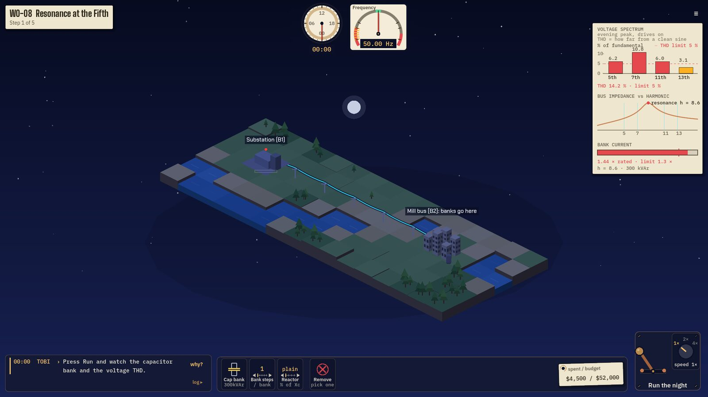

A mill full of motors: reactive power, capacitor banks and the harmonics they can ring with.

L08 Resonance at the Fifth: the harmonic spectrum beside the map
WO-07 The Lagging Mill
Mill Town · Sarn rice mill, 06:00
A rice mill (1.2 MW, power factor 0.70) and a village share a 4 km 11 kV feeder. Keep the feeder from tripping and the mill bus inside its voltage band all day.
On the radio
ADA Year four. Mill Town grew up around one rice mill, and a mill is a field of motors.
TOBI A motor is a coil. Building its magnetic field takes current that does no work, and the feeder carries every amp of it.
VANCE The feeder is rated 115 amps. A fatter wire costs a fortune; a capacitor bank is pocket change. But a bank left on at night with the mill off pushes current back up the line.
Steps
Press Run and read the feeder current at the evening peak.The mill pulls current that carries no useful power, and the feeder is rated for 115 A.
Add a capacitor bank at the mill bus.A capacitor supplies the magnetising current the motors need close to where it is used.
Switch the bank in, or set it to switch itself.A bank left on at night with the mill off pushes current the other way; an automatic bank follows the voltage.
Run the whole day.The mill starts at 06:00, stops for lunch and stops at 22:00; the evening peak is the hard hour.
power factorreactive powerphasorscapacitor compensation
WO-08 Resonance at the Fifth
Mill Town · Sarn Textiles, 06:00
A textile factory with variable-speed drives joins the Mill Town feeder, and the capacitor bank starts to cook. Keep the bank's current under 1.3 times its rating, the voltage THD at the 11 kV bus under 5 %, and the power factor at the evening peak at 0.95 or better.
On the radio
ADA Year five. Sarn Textiles put in variable-speed drives. A drive does not draw a sine wave: it draws a lump of current every sixth of a cycle.
TOBI Those lumps are harmonics: 5 times 50 Hz, 7 times, 11 times. And the capacitor bank you gave the mill is a spring waiting for one of them.
VANCE The council wants the power factor kept up and the neighbours' lights clean. A reactor in series costs less than a new bank, and a filter costs more than both.
Steps
Press Run and watch the capacitor bank and the voltage THD.The drives start at 08:00. A drive draws current in lumps, which is a 5th, 7th, 11th and 13th harmonic of 50 Hz.
Place a capacitor bank at the mill bus, as in the last job.The feeder still needs its power factor corrected: Q_c = P (tan φ₁ − tan φ₂).
Put a reactor in series with the bank: pick a detuned bank (7 %) or a filter (4.7).A plain bank with the supply is an LC circuit: parallel resonance at h = √(S_sc ÷ Q_c). A reactor of p of the capacitor's reactance moves it to √(1 ÷ (Q_c ÷ S_sc + p)).
Switch the bank in.An unswitched bank does nothing: no reactive power, no resonance.
Run the whole day.The factory starts at 08:00 and the evening peak is the hard hour for the power factor.
harmonicsresonancedetuned reactorsthd
WO-09 The Hundred-Percent Trap
The Hills · Redstone quarry, 14:00
A 35 km 33 kV feeder carries the hill quarry's crushers and the far end sags at the peak. Add series capacitors to cancel part of the line's reactance, keep the far end at 0.95 pu or better, and survive a three-phase fault at the quarry at 21:00.
On the radio
ADA Year six. The quarry crushers are on the end of 35 kilometres of wire. Every kilometre has resistance and reactance, and the reactance drops voltage in proportion to the reactive power.
TOBI A series capacitor cancels line reactance. Cancel half and the line looks half as long to the reactive current. Cancel all of it and the line is just a resistor.
VANCE Our feeder breaker is the old oil one, rated 1.4 kiloamps. More compensation is not better compensation. Go carefully.
Steps
Press Run and read the far-end voltage at the quarry.The crushers run at power factor 0.70, so the feeder carries a lot of reactive current, and X_L · Q is the biggest part of the voltage drop.
Add a series capacitor to the feeder: pick how much of the line's reactance to cancel.A series capacitor puts X_C in the loop against X_L: the working reactance is X_L (1 − k). More compensation lifts the far-end voltage, but think about what a fault sees.
Run the afternoon and evening.At 21:00 a three-phase fault hits the quarry bus. The feeder breaker has to clear it.
series compensationline reactancefault currentresonance